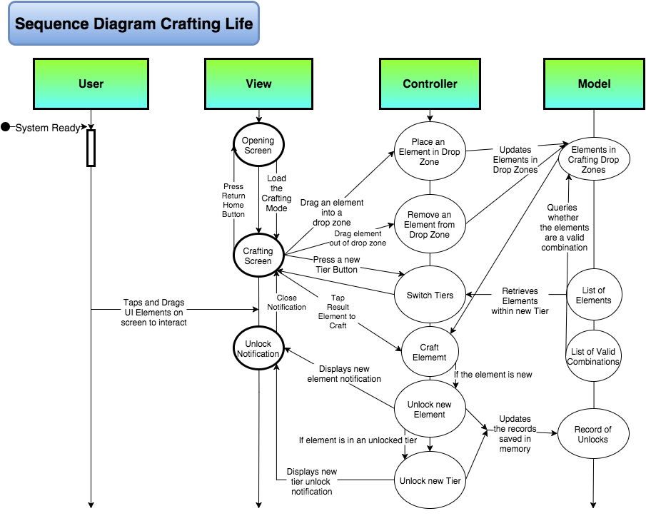

I took introductory and fundamental courses at Smith, Hampshire, and Amherst College. I found Smith's computer science highly challenging, but engagingly applied. Hampshire's was project based, with a secondary focus on skills. Amherst's System courses were the most challenging. They were deeply theoretical and abstract. They also focused on hardware which has been the least relevant subfield to my concentration.
Introduction to Computer Science II (Amherst)
Programming with Data Structures (Smith)
Computer Systems I (Amherst)
Computer Systems II (Amherst)
Algorithms (Smith)
Software Engineering (Hampshire)
Brute Force Puzzle Solving Algorithm: Introduction to Computer Science II
Downloadable JAR of Puzzle Solver: Introduction to Computer Science II
Implementation of Dijkstra's Algorithm: Programming with Data Structures
Downloadable JAR of Visual Graph Program: Programming with Data Structures
Assembly Code of Basic Processor Operations: Computer Systems I
Quicksort Java Implementation: Algorithms
GitHub Repository of Stable Marriage Implementation: Algorithms
Sequence Diagram of Mobile Game, Crafting Life: Software Engineering

Computer Science A Concentration in Software Engineering
The more I code: the more I see the potential for entropy. This is why I want to pursue a career as a software engineer. I want to battle against chaos in code: striving to bring order to something that is inherently disorganized. As I've progressed through Division II, I've strived to write my code to be modular and reusable. Especially in my final semester, I've found myself able to reuse larger chunks of code and logic because I designed them in a way that fits many problems and applications.
Special Topics
I developed a variety of different code and programs for a range systems. My new learning spanned web development, graphics, artificial intelligence, and modular programming. I endeavored to bring the core concepts from these courses back into my coding repertoire. I learned about the Model View Controller Architecture, search algorithms, the Law of Demeter, raycasting, and web frameworks through these studies.
Animation I
Digital Art
Database-driven Websites
Artificial Intelligence
Advanced Programming Technique
Independent Study: Carpooling App Development
Renders: Animation I
Mining, Downloadable Build: Digital Art
Apartments, Downloadable Build: Digital Art
Text File Modification: Database-driven Websites
Agent Behavior Script: Artificial Intelligence
Agents in Virtual Environment: Artificial Intelligence
Hit-Testing by Color: Advanced Programming Technique
Housing Units, Data Visualization: Advanced Programming Technique